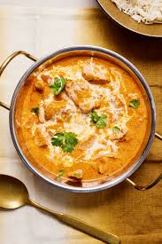
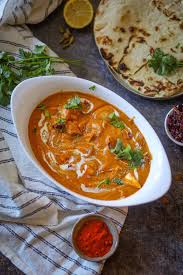
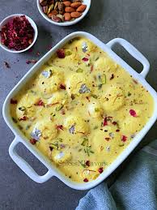

Recipe Junction is a website where various recipes from different cuisines and culinary traditions converge. Our platform typically offers an array of recipes, catering to diverse tastes and dietary preferences and home cooks
Italian Cuisine :
Pasta
Description : Pasta is a staple of Italian cuisine and a beloved dish worldwide, known for its versatility and comforting flavors. It comes in many shapes and sizes, from spaghetti and penne to farfalle and fusilli, each perfect for different types of sauces and ingredients. Made from simple ingredients like durum wheat semolina or flour and water, pasta can be served in countless ways, whether in a rich and hearty meat sauce, a light and fresh vegetable medley, or a creamy and indulgent cheese sauce. It's a dish that brings people together, offering warmth and satisfaction with every bite.
Description : Enchiladas are a popular Mexican dish that bursts with flavor and comfort in every bite. Made by rolling soft corn tortillas around a variety of fillings such as seasoned meat, beans, cheese, or vegetables, and then baking them in a savory sauce, enchiladas offer a delightful combination of textures and tastes. The rich, tangy enchilada sauce, often made with tomatoes, chilies, and spices, perfectly complements the hearty fillings. Topped with melted cheese and fresh garnishes like cilantro, sour cream, and avocado, enchiladas are a versatile and satisfying meal that can be enjoyed for any occasion, bringing a taste of Mexico to your table.
Indian Cuisine :

Butter Chicken
Description : Butter Chicken, also known as Murgh Makhani, is a quintessential Indian dish renowned for its rich and creamy texture, paired with tender pieces of marinated chicken. Originating from the vibrant flavors of North India, this dish features chicken simmered in a velvety tomato-based sauce infused with aromatic spices like garam masala, cumin, and fenugreek. Finished with a touch of butter and cream, Butter Chicken offers a harmonious balance of sweet, tangy, and savory flavors, making it a favorite in Indian cuisine enjoyed worldwide.
Daal Makhni
Description : Daal Makhni is a cherished Indian lentil dish known for its creamy texture and robust flavors. Slow-cooked black lentils (urad dal) and red kidney beans (rajma) are simmered with aromatic spices, tomatoes, ginger, and garlic, creating a hearty and wholesome dish. Finished with a dollop of butter or cream, Daal Makhni offers a comforting blend of earthy lentils and aromatic spices, making it a staple in Punjabi cuisine and a popular choice for vegetarian meals.

Shahi Paneer
Description : Shahi Paneer is a luxurious Indian dish fit for royalty, featuring paneer (Indian cottage cheese) simmered in a creamy and aromatic sauce. Prepared with a rich blend of tomatoes, cashews, cream, and fragrant spices like cardamom and saffron, Shahi Paneer offers a delightful balance of sweetness and spice. This regal dish is garnished with nuts and dried fruits, adding a touch of elegance and flavor to every creamy bite, making it a beloved choice for special occasions and celebrations.
Desserts :
Fudgy Brownie
Description : Fudgy Brownies are decadent chocolate treats beloved for their dense and moist texture. Made with rich cocoa powder, melted chocolate, butter, and sugar, these brownies boast a deep chocolate flavor with a slight chewiness. Whether enjoyed warm with a scoop of ice cream or simply dusted with powdered sugar, Fudgy Brownies are a timeless dessert that satisfies chocolate cravings and brings joy to any gathering or sweet indulgence.

Rasmalai
Description : Rasmalai is a delicate Indian dessert that captivates with its creamy, milky sweetness. Soft paneer (Indian cottage cheese) dumplings are soaked in a sweetened and flavored milk syrup infused with cardamom, saffron, and chopped nuts. Chilled and served cold, Rasmalai offers a refreshing contrast to spicy Indian meals and is a delightful conclusion to any feast or celebration, embodying the essence of traditional Indian sweets with every bite.